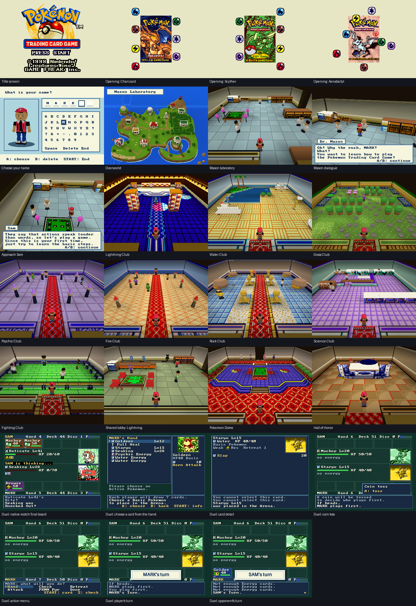

Presentation reviews
Both reviewers received the same brief and 27 screenshots, independently.
- Calmer floor patterns and clearer focal objects.
- More recognizable prop silhouettes.
- Room framing and lighting that support characters.
- Clearer duel information and feedback.
Review brief · Build checks · Review inputs
Native 320 × 240 captures before final VI filtering.
